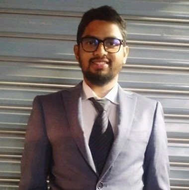

Md Jakaria

I have a strong inclination towards problem-solving and competitive programming, actively seeking out
new challenges to overcome. I like to solve new problems and learn new things like data structures and
algorithms. I aspire to join a respected company where I can apply my acquired skills and
insights to make meaningful contributions.
Skills
Language: C, C++, Java
Frontend: HTML, CSS
DevOps: Git
Database: MySql
Data Science: Pandas, Numpy, Matplotlib
Others: Latex
Proficient in:
- C++
- Problem-Solving
- Data Structures and Algorithms
- Competitive Programming
Education
American International University-Bangladesh
Bachelor of Science in Computer Science and Engineering
May 2017 - February 2023
Dhaka, Bangladesh
BCIC College
Higher Secondary Certificate
August 2014 - August 2016
Dhaka, Bangladesh
Monipur High School & College
Secondary School Certificate
January 2006 - March 2014
Dhaka, Bangladesh
Achievements
- Honorable Mention, (2020, 2021, 2022, 2023) ICPC Asia Dhaka
Regional Preliminary Contest
- Ranked 30th out of 115 teams, "6th DRMC International Tech Carnival
2023 Programming Contest"
- Qualified for Meta Hacker cup 2023 Round 2
- Participated in 100+ online programming contests including Google
Codejam, KickStart, Meta Hackercup, Codeforces, Atcoder, Codechef, etc
- Solved 1100+ problems in different online judges like Codeforces (Solved: 500+ problems), Codechef,
AtCoder, UVa, Hackerrank, HackerEarth, Spoj, CSES, Lightoj, LeetCode
Thesis
Temperature Bias Correction using Machine Learning Algorithms
- Used various machine learning algorithms to predict temperature for
bias correction
About Me
Contact Me